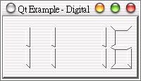
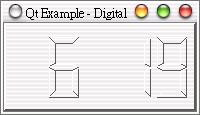

這個範例是Qt安裝好之後所提供的實例，上一個範例就是改寫自這個例子，在這個例子中，可以學習到更多有關於事件的處理。
首先編輯dclock.h：
#ifndef DCLOCK_H
#define DCLOCK_H
#include <qlcdnumber.h>
class DigitalClock : public QLCDNumber // digital clock widget
{
Q_OBJECT
public:
DigitalClock( QWidget *parent=0, const char *name=0 );
protected: // event handlers
void timerEvent( QTimerEvent * );
void mousePressEvent( QMouseEvent * );
private slots: // internal slots
void stopDate();
void showTime();
private: // internal data
void showDate();
bool showingColon;
int normalTimer;
int showDateTimer;
};
#endif // DCLOCK_H
再來編輯dclock.cpp：
#include "dclock.h"
#include <qdatetime.h>
//
// Constructs a DigitalClock widget with a parent and a name.
//
DigitalClock::DigitalClock( QWidget *parent, const char *name )
: QLCDNumber( parent, name )
{
showingColon = FALSE;
setFrameStyle( QFrame::Panel | QFrame::Raised );
setLineWidth( 2 ); // set frame line width
showTime(); // display the current time
normalTimer = startTimer( 500 ); // 1/2 second timer events
showDateTimer = -1; // not showing date
}
//
// Handles timer events for the digital clock widget.
// There are two different timers; one timer for updating the clock
// and another one for switching back from date mode to time mode.
//
void DigitalClock::timerEvent( QTimerEvent *e )
{
if ( e->timerId() == showDateTimer ) // stop showing date
stopDate();
else { // normal timer
if ( showDateTimer == -1 ) // not showing date
showTime();
}
}
//
// Enters date mode when the left mouse button is pressed.
//
void DigitalClock::mousePressEvent( QMouseEvent *e )
{
if ( e->button() == QMouseEvent::LeftButton ) // left button pressed
showDate();
}
//
// Shows the current date in the internal lcd widget.
// Fires a timer to stop showing the date.
//
void DigitalClock::showDate()
{
if ( showDateTimer != -1 ) // already showing date
return;
QDate date = QDate::currentDate();
QString s;
s.sprintf( "%2d %2d", date.month(), date.day() );
display( s ); // sets the LCD number/text
showDateTimer = startTimer( 2000 ); // keep this state for 2 secs
}
//
// Stops showing the date.
//
void DigitalClock::stopDate()
{
killTimer( showDateTimer );
showDateTimer = -1;
showTime();
}
//
// Shows the current time in the internal lcd widget.
//
void DigitalClock::showTime()
{
showingColon = !showingColon; // toggle/blink colon
QString s = QTime::currentTime().toString().left(5);
if ( !showingColon )
s[2] = ' ';
if ( s[0] == '0' )
s[0] = ' ';
display( s ); // set LCD number/text
}
再來是主函式main.cpp：
#include "dclock.h"
#include <qapplication.h>
int main( int argc, char **argv )
{
QApplication a( argc, argv );
DigitalClock *clock = new DigitalClock;
clock->resize( 170, 80 );
a.setMainWidget( clock );
clock->setCaption("Qt Example - Digital Clock");
clock->show();
return a.exec();
}
這個範例的大部份程式碼與我們上一個範例相同，從原文註解中您應可以稍微瞭解每一行的作用，我們解說重要的部份。
啟動QTimer，並設定每秒鐘發出QTimerEvent事件，startTimer()會傳回一個整數表示這個設定的timerId，我們可以藉由這
個timerId得知是哪個時間間隔放出的事件，不過就這個程式而言，normalTimer是沒有使用到的；showDateTimer也是用來接收
timerId，指示QLCDNumber要顯示日期或時間，-1時表示不顯示，這在之後會用到：
normalTimer = startTimer( 500 ); // 1/2 second timer events
showDateTimer = -1; // not showing date
如果滑鼠在視窗上按下，就會發生滑鼠事件QMouseEvent，接收此事件的mousePressEvent函式會被執行，我們使用button()取得按下的是滑鼠左鍵或是右鍵，如果是左鍵，就執行showData()來顯示日期：
void DigitalClock::mousePressEvent( QMouseEvent *e )
{
if ( e->button() == QMouseEvent::LeftButton ) // left button pressed
showDate();
}
是否顯示日期的函式，如果showDateTimer不等於-1，表示目前正在顯示日期，所以就直接跳出程式，不作處理；如果showDateTimer
等於-1，則要顯示日期，我們使用QDate::currentDate()取得系統目前的日期，這次我們使用QString的sprintf()方法設
定日期格式，分別使用month()與day()取得日期的月與日，sprintf()的設定方式與C語言的printf()是類似
的，使用格式限定字%d來指定格式，%2d表示每個整數用兩個定位點來顯示：
void DigitalClock::showDate()
{
if ( showDateTimer != -1 ) // already showing date
return;
QDate date = QDate::currentDate();
QString s;
s.sprintf( "%2d %2d", date.month(), date.day() );
display( s ); // sets the LCD number/text
showDateTimer = startTimer( 2000 ); // keep this state for 2 secs
}
我們的日期顯示使用startTimer(2000)設定為顯示2000毫秒（2秒），並取得timerId儲存於showDateTimer中。
由於這個程式會啟動兩個QTimer，當我們接收到QTimerEvent事件時，我們必須判斷是哪一個QTimer所發出的，我們可以使用e->
timerId()來取得事件的timerId，再與之前我們所取得的timerId比較，像在這例中，如果取得的timerId等於
showDateTimer所儲存的，表示2000毫秒的間隔到了，這表示該從日期顯示轉回時間顯示，我們呼叫stopDate()進行這項處理：
void DigitalClock::timerEvent( QTimerEvent *e )
{
if ( e->timerId() == showDateTimer ) // stop showing date
stopDate();
else { // normal timer
if ( showDateTimer == -1 ) // not showing date
showTime();
}
}
這是停止日期顯示的處理函式，killTimer()會刪除指定的timerId的QTimer，而我們再度將showDateTimer設定為-1，並重;新顯示系統時間：
void DigitalClock::stopDate()
{
killTimer( showDateTimer );
showDateTimer = -1;
showTime();
}
這個程式的執行結果有兩個狀態，一個是顯示系統時間，當按下滑鼠時就顯示系統日期，過了2秒後會自動跳回時間顯示，以下是時間顯示：

以下是日期顯示：

|